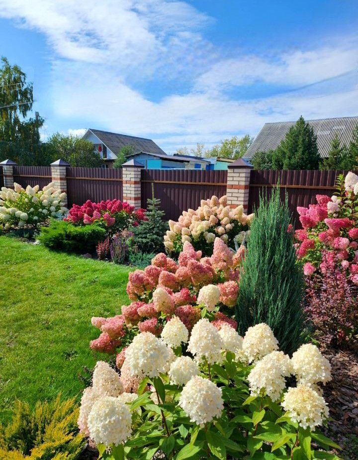
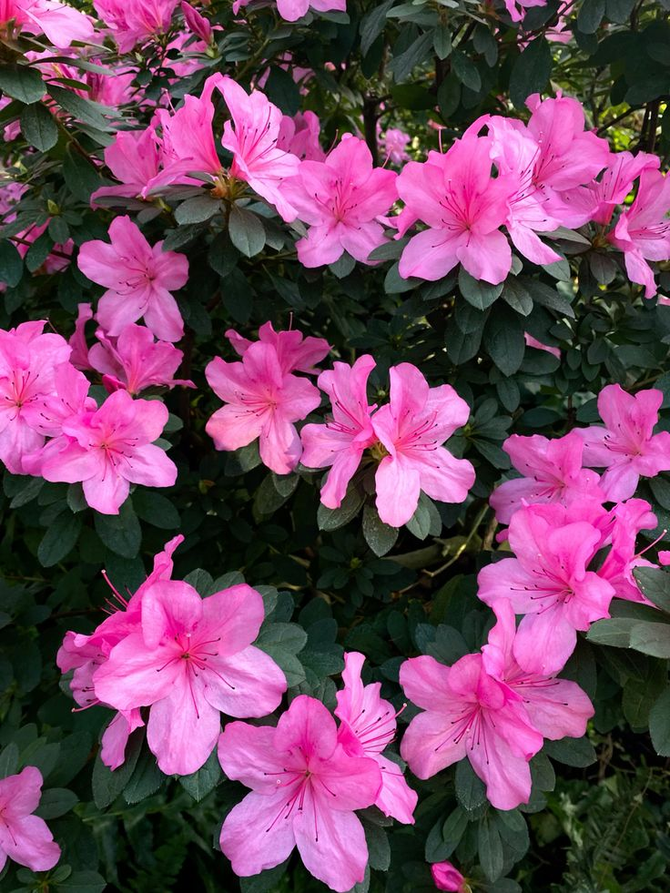

Багаторічні садові рослини дозволяють створити гармонійний і живий простір, який щороку змінюється разом із порами року. Продумане поєднання кольорів, фактур листя та висоти кущів допомагає сформувати доглянуту композицію без зайвих зусиль.
У цьому міні-сайті всі сторінки підключені до єдиного зовнішнього файлу стилів, що забезпечує єдине оформлення шрифтів, відступів, кольорів та станів посилань на всьому ресурсі.

Під час оформлення сторінок важливо зберігати баланс між декоративністю та зручністю читання. М'які відступи від країв вікна, вирівнювання по ширині та чітка структура розділів роблять текст приємним для сприйняття.
Перейди до розділу Каталог рослин, щоб переглянути приклади багаторічників, або відкрий сторінку Поради з догляду для ознайомлення з базовими правилами вирощування.